Fox Nano V0
Placa compacta totalmente compativel com Arduino Nano só que com suporte pra display OLED, medição de VIN e Receptor IR integrados. Com ela é possivel fazer uma interface homem maquina (IHM) completa, usando o display como saida e a recepção IR como entrada, onde o ususário pode inserir valores e dar comandos usando um controle remoto IR. Ela também é especialente interessante pra projetos de seguidores de linha e Mini Sumo.
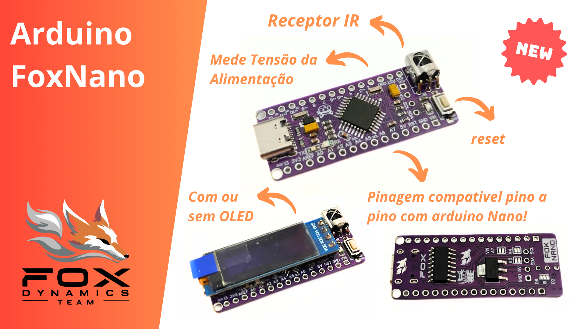
Pinout
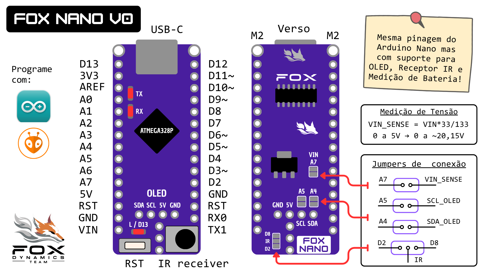
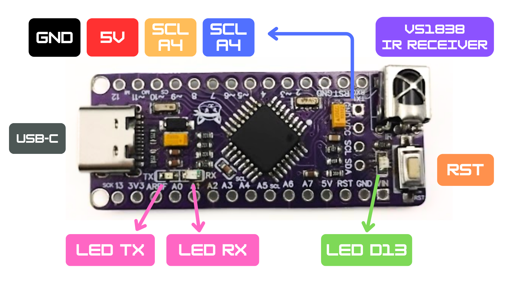
Caracteristicas
| Parametro | valor |
|---|---|
| Medidas | 45,2 x 28,7 mm |
| Medidas + USB | 46,2 x 28,7 mm |
| Alimentação | 6 a 12V |
| Peso sem OLED | 3,5g |
| Peso com OLED | 6,0g |
Medidas
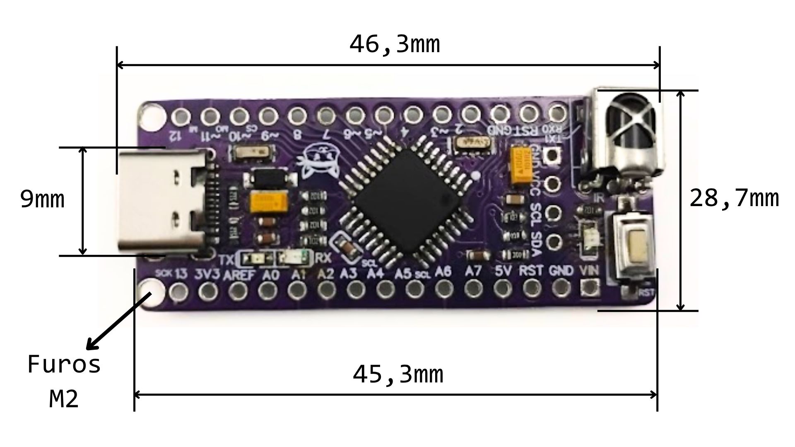
Programação usando Arduino
A FoxNano é totalmente compativel com o Arduino nano, por isso ele pode ser programada selecionando a placa Arduino nano na IDE do Arduino. Todos os exemplos para Arduino nano irão Funciona com a FoxNano.
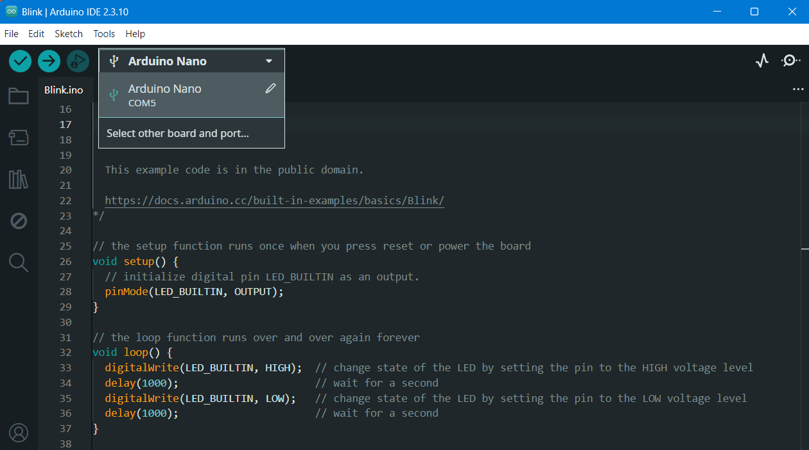
Receptor IR
A FoxNano possui um receptor IR que pode ser soldado ao pino D2, D8 ou até deixar desconectado. A seleção é feita no jumper IR conforme a legenda.
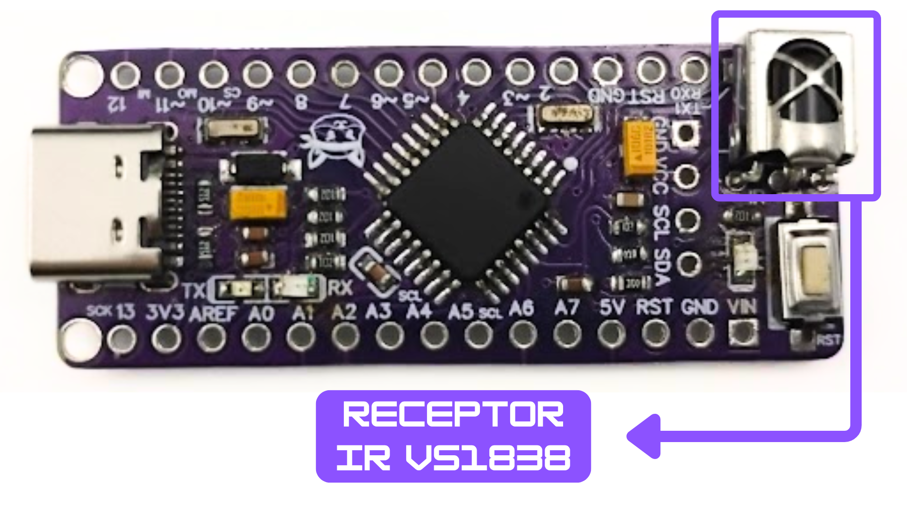
Jumper IR
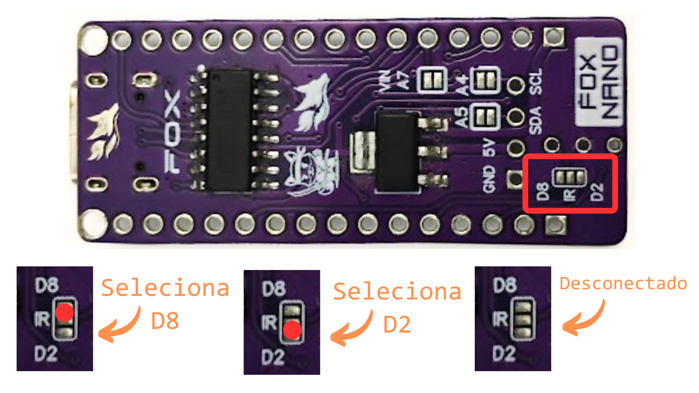
Medição de Tensão de VIN
A FoxNano possui um divisor de tensão conectado ao pino de alimentação externa VIN. A saida do divisor pode ser conectado ao pino A7 para medição de tensão. O divisor é composto por um resistor de 100 Kohms conectado de VIN pra V_SENSE e outro de 33 Kohms de V_SENSE para GND.
Formula:
V_SENSER = VIN * 33/133
No código pode ser lido usando a função abaixo:
float readVin(){
return analogRead(A7)*(5.0/1024.0)*(133.0/33.0);
}
Jumper:
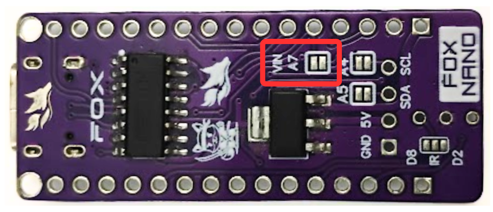
Saida I2C e Display OLED
A FoxNano possui uma saida I2C conectada aos pinos A4 e A5. Nela é possivel conectar um display OLED.
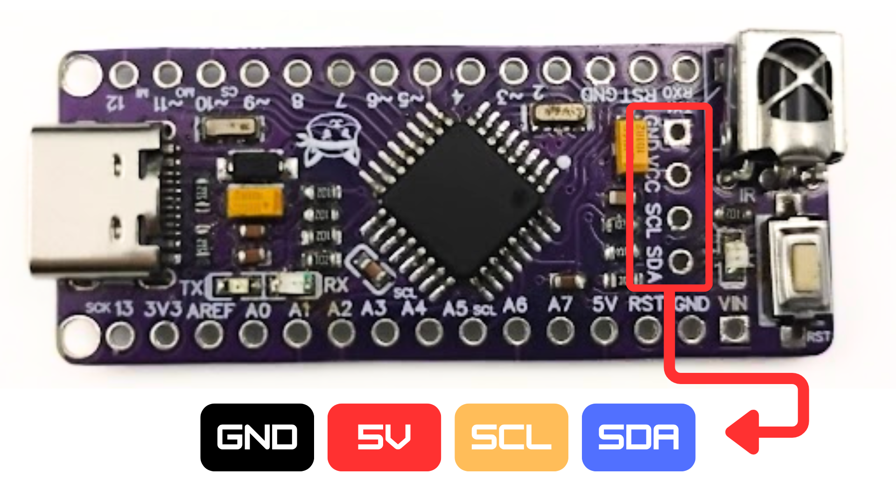
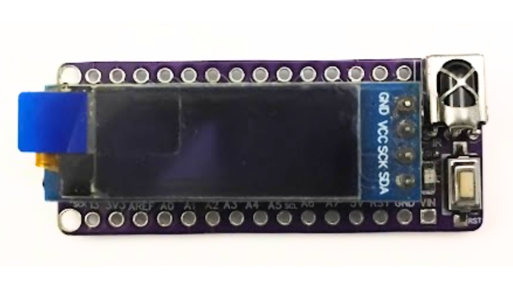
Jumpers A4 e A5
Os pinos A4 (SDA) e A5 (SCL) podem ser desconectados da saida I2C disoldando os jumpers de solda A4 e A5 no verso da placa. Isso é util quando o OLED está soldado mas é preciso usar a placa em algum projeto que use os pinos A4 e A5 para outras funções, assim, não será possivel usar o OLED mas não precisa disoldar ele.
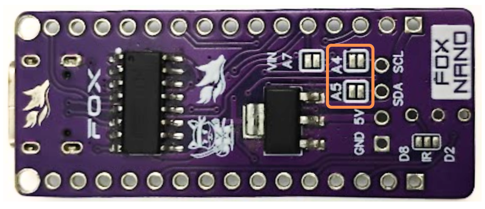
Outras possibilidade para saida I2C
Os pinos podem ser usado pra outras funções como conectar um servo ou sensor analogico. Na imagem abaixo um exemplo usamdo um servo.
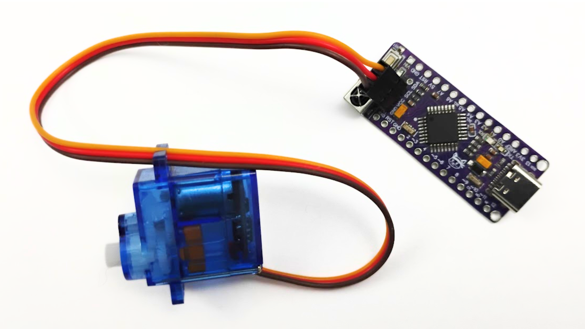
Também é possivel conectar um display OLED maior.
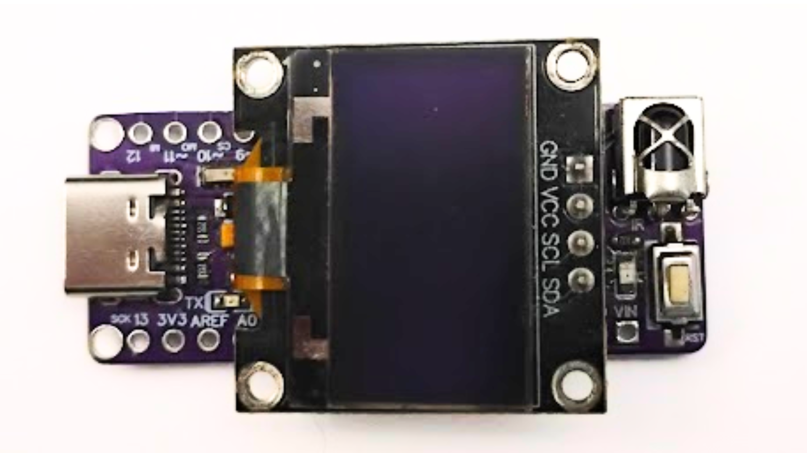